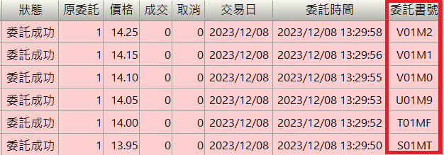

使用 frozenset 處理委託書號與序號對應問題

委託書號與序號
只要交易委託有送到交易所，你就會收到委託書編號 (Book Number, bookNo)，簡稱 委託書號
在台灣委託書號原則上都是 5 碼英數字混合，不分大小寫 1

而預約單或智慧單2，可能還未送到交易所，但券商已經收到
就會自己編委託書序號（Sequence number, seqNo)，簡稱 委託序號
每家券商編法不同，一種方式是編 13 碼純數字
所以一個委託，他就可能存在多個可以當作委託索引 (index) 的東西：
- 在還沒有抵達交易所前，在券商那預約中，僅有委託序號
- 交易所開始接收券商委託，會有委託序號和委託書號
對於這種多重且不定的鍵值的情況，可以使用 Python frozenset 當字典的 key
frozenset 的用法
先來複習一下 frozenset 有兩個主要功能：
- 不可更改且不會重複的集合
- 可做為字典的 key
第一點衍生的使用情境就是，在跨進程間共享不可重複變數。
第二點的使用情境比較多，基本上可以分成兩類：
a. 時間面, 紀錄資料的版本或更新
b. 空間面, 表示資料的複數特徵
例如你原本有一個基本資料表單，並且紀錄每個版本使用者完成並審核通過的欄位
透過 frozenset 可以有另一種寫法：
data = [{ version: 1, verified: set(["name"]) }, # 新增名字, 驗證通過
{ version: 2, verified: set(["name" "phonenumber"]) }, # 新增手機號碼, 驗證通過
{ version: 3, verified: set(["name" "address"])}, # 修改手機號碼, 沒有驗證 ; 新增地址, 驗證通過
# frozenset
data = {
frozenset(["name"]): {version: 1},
frozenset(["name", "phonenumber"]): {version: 2},
frozenset(["name", "address"]): {version: 3}
}使用 frozenset 作為字典 key，通常代表狀態比較確定，或是有固定有限的複數特徵
並且作為複雜的 key, 通常對應的東西應該要簡單單一，否則複雜對應複雜，就失去意義
委託書號與序號對應問題
所以我們就能使用 frozenset 作為字典 key, 例如：
replyDict = {
frozenset(["V01M0", "12345678"]): reply1,
frozenset(["23456789"]): reply2
}
# 查找非常簡單:
seqNo = "23456789"
for key, value in replyDict.items():
if seqNo in key:
reply = value
break查找就變得非常簡單，委託書號和序號都會找到同一個 Reply
而如果一旦送到交易所有委託序號了，就能：
# 得到委託書號了，新增 key 也非常方便
seqNo = "23456789"
bookNo = "ABC12"
for key, value in replyDict.items():
if seqNo in key:
replyDict[frozenset(key | {bookNo})] = value
del replyDict[key]
break就算在多線程, 多進程中, 用原始 seqNo 找也會找到對的, 所以不用擔心
透過這個方式，就可以無論委託書號或序號，都能指向同一個資料，就不需要判斷了
甚至改單、刪單要互相指向同一個 Order，也都可以很容易做
Footnotes
1 委託書編號原則 (公文) https://www.tpex.org.tw/storage/ebdata/9905/0500057.htm
2 在台灣洗價、觸價單、多重IOC單是券商服務，概括是智慧單